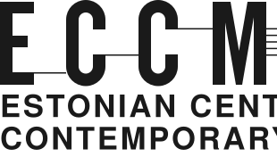
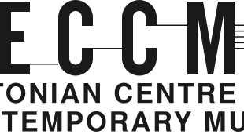
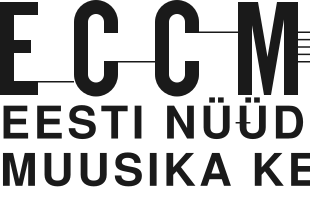
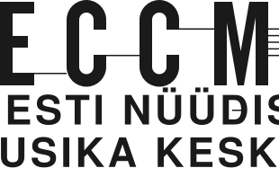

Tagline, setting 1
Setting 1 of the DIN page: uppercase at 0.08em on two lines fitted to the letters, in English and Estonian, both lines starting on the E or both centred on the letters. The Estonian breaks inside its long word, the hyphen a hairline of the mark's weight. First in DIN Condensed, as files; then the same in Instrument Sans at width 75, drawn here from the webfont.
DIN Condensed



